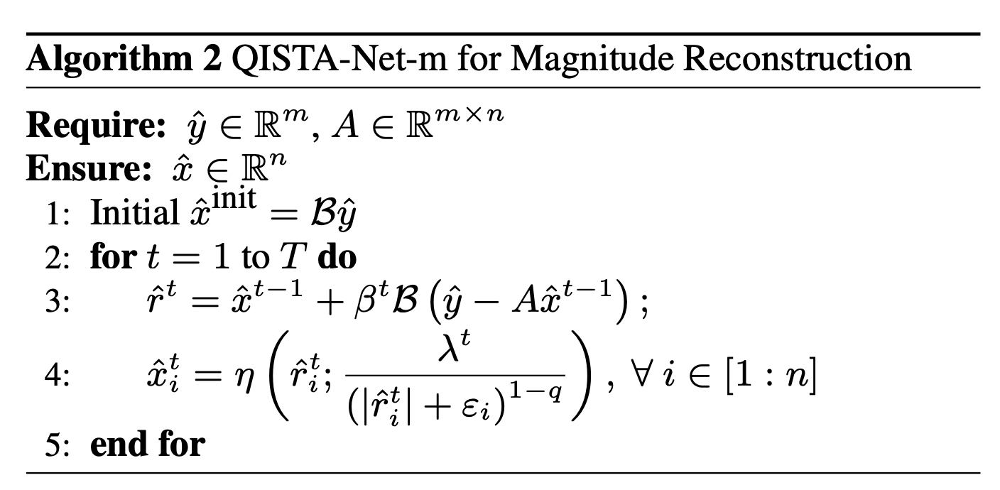
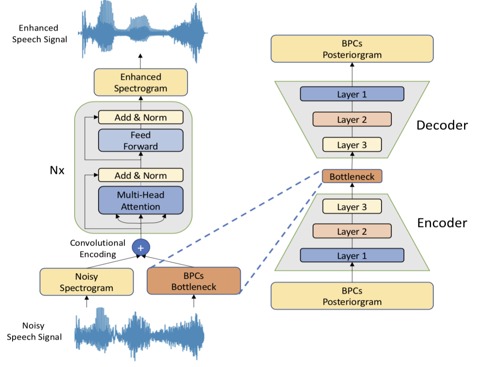

Mutual Reinforcement of LLM Dialogue Synthesis and Summarization Capabilities for Few-Shot Dialogue Summarization (Findings of NAACL 2025)
Yen-Ju Lu,Ting-Yao Hu, Hema Swetha Koppula, Hadi Pouransari, Jen-Hao Rick Chang, Yin Xia, Xiang Kong, Qi Zhu, Simon Wang, Oncel Tuzel, Raviteja Vemulapalli
In this work, we propose Mutual Reinforcing Data Synthesis (MRDS) within LLMs to improve few-shot dialogue summarization task. Unlike prior methods that require external knowledge, we mutually reinforce the LLM\'s dialogue synthesis and summarization capabilities, allowing them to complement each other during training and enhance overall performances. The dialogue synthesis capability is enhanced by directed preference optimization with preference scoring from summarization capability. The summarization capability is enhanced by the additional high quality dialogue-summary paired data produced by the dialogue synthesis capability. By leveraging the proposed MRDS mechanism, we elicit the internal knowledge of LLM in the format of synthetic data, and use it to augment the few-shot real training dataset.
CA-SSLR: Condition-aware self-supervised learning representation for generalized speech processing (NeurIPS 2024)
Yen-Ju Lu, Jing Liu, Thomas Thebaud, Laureano Moro-Velazquez, Ariya Rastrow, Najim Dehak, Jesus Villalba
We introduce Condition-Aware Self-Supervised Learning Representation (CA-SSLR), a generalist conditioning model broadly applicable to various speech-processing tasks. Compared to standard fine-tuning methods that optimize for downstream models, CA-SSLR integrates language and speaker embeddings from earlier layers, making the SSL model aware of the current language and speaker context. This approach reduces the reliance on the input audio features while preserving the integrity of the base SSLR. CA-SSLR improves the model’s capabilities and demonstrates its generality on unseen tasks with minimal task-specific tuning.
Improving Speech Enhancement Performance by Leveraging Contextual Broad Phonetic Class Information
( TASLP 2023 )
Yen-Ju Lu, Chia-Yu Chang, Cheng Yu, Ching-Feng Liu, Jeih-weih Hung, Shinji Watanabe, Yu Tsao
In this article, we explore the contextual information of articulatory attributes as additional information to further benefit SE. More specifically, we propose to improve the SE performance by leveraging losses from an end-to-end automatic speech recognition (E2E-ASR) model that predicts the sequence of broad phonetic classes (BPCs). We also developed multi-objective training with ASR and perceptual losses to train the SE system based on a BPC-based E2E-ASR.
ESPnet-SE++: Speech Enhancement for Robust Speech Recognition, Translation, and Understanding. (Interspeech 2022)
Yen-Ju Lu, Xuankai Chang, Chenda Li, Wangyou Zhang, Samuele Cornell, Zhaoheng Ni, Yoshiki Masuyama, Brian Yan, Robin Scheibler, Zhong-Qiu Wang, Yu Tsao, Yanmin Qian, Shinji Watanabe
This paper presents recent progress on integrating speech separation and enhancement (SSE) into the ESPnet toolkit. Compared with the previous ESPnet-SE work, numerous features have been added, including recent state-of-the-art speech enhancement models with their respective training and evaluation recipes. Importantly, a new interface has been designed to flexibly combine speech enhancement front-ends with other tasks, including automatic speech recognition (ASR), speech translation (ST), and spoken language understanding (SLU). To showcase such integration, we performed experiments on carefully designed synthetic datasets for noisy-reverberant multi-channel ST and SLU tasks, which can be used as benchmark corpora for future research. In addition to these new tasks, we also use CHiME-4 and WSJ0-2Mix to benchmark multi- and single-channel SE approaches. Results show that the integration of SE front-ends with back-end tasks is a promising research direction even for tasks besides ASR, especially in the multi-channel scenario. The code is available online at this https URL. The multi-channel ST and SLU datasets, which are another contribution of this work, are released on HuggingFace.
Towards Low-distortion Multi-channel Speech Enhancement: The ESPNet-SE Submission to The L3DAS22 Challenge. (ICASSP 2022)
Yen-Ju Lu, Samuele Cornell, Xuankai Chang, Wangyou Zhang, Chenda Li, Zhaoheng Ni, Zhong-Qiu Wang, Shinji Watanabe
This paper describes our submission to the L3DAS22 Challenge Task 1, which consists of speech enhancement with 3D Ambisonic microphones. The core of our approach combines Deep Neural Network (DNN) driven complex spectral mapping with linear beamformers such as the multi-frame multi-channel Wiener filter. Our proposed system has two DNNs and a linear beamformer in between. Both DNNs are trained to perform complex spectral mapping, using a combination of waveform and magnitude spectrum losses. The estimated signal from the first DNN is used to drive a linear beamformer, and the beamforming result, together with this enhanced signal, are used as extra inputs for the second DNN which refines the estimation. Then, from this new estimated signal, the linear beamformer and second DNN are run iteratively. The proposed method was ranked first in the challenge, achieving, on the evaluation set, a ranking metric of 0.984, versus 0.833 of the challenge baseline.
Conditional Diffusion Probabilistic Model for Speech Enhancement. (ICASSP 2022)
Yen-Ju Lu , Zhong-Qiu Wang, Shinji Watanabe, Alexander Richard, Cheng Yu, Yu Tsao
Speech enhancement is a critical component of many user-oriented audio applications, yet current systems still suffer from distorted and unnatural outputs. While generative models have shown strong potential in speech synthesis, they are still lagging behind in speech enhancement. This work leverages recent advances in diffusion probabilistic models, and proposes a novel speech enhancement algorithm that incorporates characteristics of the observed noisy speech signal into the diffusion and reverse processes. More specifically, we propose a generalized formulation of the diffusion probabilistic model named conditional diffusion probabilistic model that, in its reverse process, can adapt to non-Gaussian real noises in the estimated speech signal. In our experiments, we demonstrate strong performance of the proposed approach compared to representative generative models, and investigate the generalization capability of our models to other datasets with noise characteristics unseen during training.

A Study on Speech Enhancement Based on Diffusion Probabilistic Model. (APSIPA 2021)
Yen-Ju Lu , Yu Tsao, Shinji Watanabe
Diffusion probabilistic models have demonstrated an outstanding capability to model natural images and raw audio waveforms through a paired diffusion and reverse processes. The unique property of the reverse process (namely, eliminating non-target signals from the Gaussian noise and noisy signals) could be utilized to restore clean signals. Based on this property, we propose a diffusion probabilistic model-based speech enhancement (DiffuSE). To attain better enhancement performance, we designed an advanced reverse process, termed the supportive reverse process, which adds noisy speech in each time-step to the predicted speech. The experimental results show that DiffuSE yields performance that is comparable to related audio generative models on the standardized Voice Bank corpus SE task. Moreover, relative to the generally suggested full sampling schedule, the proposed supportive reverse process especially improved the fast sampling, taking few steps to yield better enhancement results over the conventional full step inference process.
An Exploration of Self-Supervised Pretrained Representations for End-To-End Speech Recognition. (ASRU 2021)
Xuankai Chang, Takashi Maekaku, Pengcheng Guo, Jing Shi, Yen-Ju Lu, Aswin Shanmugam Subramanian, Tianzi Wang, Shu-wen Yang, Yu Tsao, Hung-yi Lee, Shinji Watanabe
Self-supervised pretraining on speech data has achieved a lot of progress. High-fidelity representation of the speech signal is learned from a lot of untranscribed data and shows promising performance. In this paper, we focus on the general applications of pretrained speech representations, on advanced end-to-end automatic speech recognition (S-ASR) models. We select several pretrained speech representations and present the experimental results on various open-source and publicly available corpora for E2E-ASR.

QISTA-Net-Audio: Audio Super-resolution via Non-Convex lq-norm Minimization. (Interspeech 2021)
Gang-Xuan Lin, Shih-Wei Hu, Yen-Ju Lu, Yu Tsao, Chun-Shien Lu
In this paper, we propose a learning model, QISTA-Net-Audio, to solve ASR in a paradigm of linear inverse problem. QISTA-Net-Audio is composed of two components. First, an audio waveform can be presented as a complex-valued spectrum, which is composed of a real and an imaginary part, in the frequency domain. We treat the real and imaginary parts as an image, and predict a high-resolution spectrum but only keep the phase information from the viewpoint of image reconstruction. Second, we predict the magnitude information by solving the sparse signal reconstruction problem. By combining the predicted magnitude and the phase together, we can recover the high-resolution waveform.

Incorporating Broad Phonetic Information for Speech Enhancement. (Interspeech 2020)
Yen-Ju Lu, Chien-Feng Liao, Xugang Lu, Jeih-Weih Hung, Yu Tsao
We have investigated three criteria to build the BPC, including two knowledgebased criteria: place and manner of articulatory and one datadriven criterion. Moreover, the recognition accuracies of BPCs are much higher than that of phonemes, thus providing more accurate phonetic information to guide the SE process under very noisy conditions. Experimental results demonstrate that the proposed SE with the BPC information framework can achieve notable performance improvements over the baseline system and an SE system using monophonic information in term
Boosting Objective Scores of a Speech Enhancement Model by MetricGAN Post-processing (APSIPA 2020)
Szu-Wei Fu, Chien-Feng Liao, Tsun-An Hsieh, Kuo-Hsuan Hung, Syu-Siang Wang, Cheng Yu, HengCheng Kuo, Ryandhimas E. Zezario, You-Jin Li, Shang-Yi Chuang, Yen-Ju Lu, Yu-Chen Lin ,Yu Tsao
The Transformer architecture has demonstrated a superior ability compared to recurrent neural networks in many different natural language processing applications. Therefore, our study applies a modified Transformer in a speech enhancement task. Specifically, positional encoding in the Transformer may not be necessary for speech enhancement, and hence, it is replaced by convolutional layers. To further improve the perceptual evaluation of the speech quality (PESQ) scores of enhanced speech, the ùë≥ùüè pre-trained Transformer is fine-tuned using a MetricGAN framework.